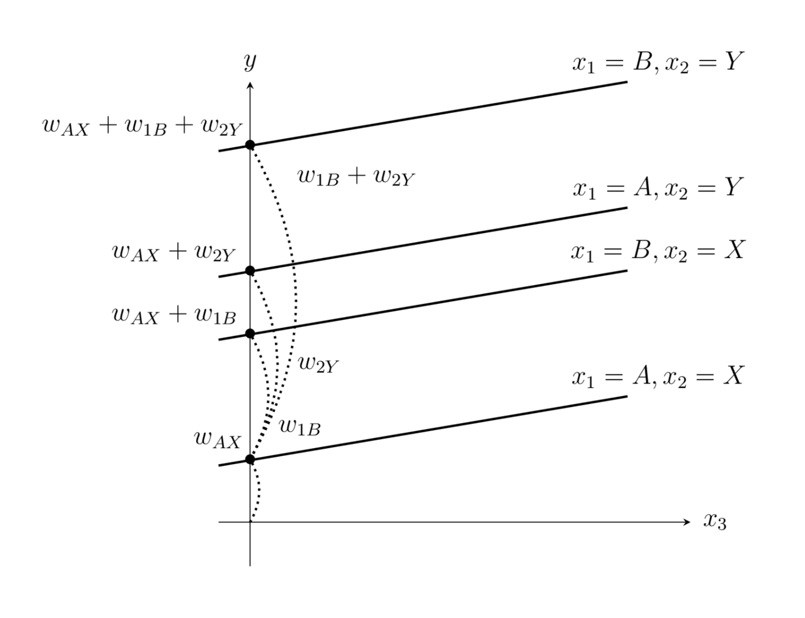

범주형 독립변수
summary
- 풀랭크 방식은 더미변수의 값을 원핫인코딩 방식으로 지정한 것으로 범주값이 달라지면 상수항만 달라지고 다른 독립변수의 가중치는 같은 모형이 된다. 범주형 독립변수가 있으면 상수항은 포함시키지 않는다.
- 축소랭크 방식은 특정한 하나의 범주값을 기준으로 기준값에 대응하는 더미변수의 가중치는 항상 1로 놓는다. 기준값인 더미변수의 가중치는 상수항이 되고 나머지 더미변수의 가중치는 그 상수항에 추가적으로 더해지는 상수항이 된다.
더미변수
더미변수(dummy variable)는 0 또는 1만으로 표현되는 값으로 어떤 특징이 존재하는가 존재하지 않는가를 표시한 독립변수이다.
풀랭크 방식
풀랭크(full-rank)는 더미변수의 값을 원핫인코딩(one-hot-encoding) 방식으로 지정한다.
범주값이 달라지면 상수항만 달라지고 다른 독립변수의 가중치(영향)는 같은 모형이 된다.
범주형 독립변수가 있으면 상수항은 포함시키지 않는다.
는 y 절편이다.
patsy 패키지는 변수의 값이 문자이면 자동으로 범주형 독립변수로 인식한다. 풀랭크 모형을 사용하려면 포뮬러 문자열에 +0 또는 -1을 붙여야 한다. 더미변수의 이름은 자동으로 원래변수의 이름 + [범주값]으로 정해진다.
데이터가 범주형 값이지만 정수로 표시된 경우에는 C() 연산자를 이용하여 범주형 값임을 명시적으로 지정할 수 있다.
축소랭크 방식
축소랭크(reduces-rank)는 특정한 하나의 범주값을 기준값(reference, baseline) 으로 하고 기준값에 대응하는 더미변수의 가중치는 항상 1으로 놓는다.
기준값인 더미변수의 가중치는 상수항이 되고 나머지 더미변수의 가중치는 그 상수항에 추가적으로 더해지는 상수항이 된다.
patsy에서 포뮬러 문자열에 +0 또는 -1이 없으면 축소랭크 방식으로 간주한다. 별도로 지정하지 않으면 알파벳 순서로 가장 빠른 범주값이 기준값이 된다. 축소랭크 방식에서는 범주값 이름 앞에 Treatment를 뜻하는 T. 기호가 붙는다.
만약 기준값을 다른 값으로 바꾸고 싶으면 Treatment 연산자를 사용한다. 다음 코드에서는 B를 기준값으로 사용하였다.
dmatrix("C(x1, Treatment('B'))", df3)
하나의 범주형 독립변수가 있는 회귀분석
model = sm.OLS.from_formula("value ~ C(month) + 0", df_nottem)
result = model.fit()
print(result.summary())
ContrastMatrix
사용자가 원하는 특정한 더미변수 값을 지정하고 싶다면 ContrastMatrix 클래스를 사용한다. ContrastMatrix 행렬은 각 클래스가 인코딩될 벡터값 목록을 미리 정의한 행렬이다.
encoding_vectors = [[1, 0], [0, 1], [0, 1]]
label_postfix = [":A", ":BC"]
contrast = ContrastMatrix(encoding_vectors, label_postfix)
dmatrix("C(x1, contrast) + 0", df4)
두 개 이상의 범주형 변수가 있는 경우
- : 기준값 인 경우의 상수항
- : 기준값 인 경우에 추가되는 상수항
- : 기준값 인 경우에 추가되는 상수항
- : 기준값 인 경우에 추가되는 상수항

범주형 독립변수와 실수 독립변수의 상호작용
dmatrix("C(x1):x2", df6)
# 결과
#DesignMatrix with shape (4, 3)
# Intercept C(x1)[A]:x2 C(x1)[B]:x2
1 1 0
1 0 2
1 4 0
1 0 5
# Terms:
# 'Intercept' (column 0)
# 'C(x1):x2' (columns 1:3)
범주형 독립변수도 종속변수에 영향을 미치고 범주형 독립변수와 실수 독립변수의 상호작용도 종속변수에 영향을 미친다면 모형은 다음과 같아진다.
범주값에 따라 상수항과 의 기울기가 모두 달라지는 모형이 된다.
dmatrix("C(x1) + C(x1):x2", df6)
# 결과
#DesignMatrix with shape (4, 4)
# Intercept C(x1)[T.B] C(x1)[A]:x2 C(x1)[B]:x2
1 0 1 0
1 1 0 2
1 0 4 0
1 1 0 5
# Terms:
# 'Intercept' (column 0)
# 'C(x1)' (column 1)
# 'C(x1):x2' (columns 2:4)
또는
dmatrix("C(x1)*x2", df6)
# 결과
#DesignMatrix with shape (4, 4)
# Intercept C(x1)[T.B] x2 C(x1)[T.B]:x2
1 0 1 0
1 1 2 2
1 0 4 0
1 1 5 5
# Terms:
# 'Intercept' (column 0)
# 'C(x1)' (column 1)
# 'x2' (column 2)
# 'C(x1):x2' (column 3)
범주형 독립변수의 상호작용
dmatrix("x1:x2 + 0", df5)
# 결과
#DesignMatrix with shape (4, 4)
# x1[A]:x2[X] x1[B]:x2[X] x1[A]:x2[Y] x1[B]:x2[Y]
1 0 0 0
0 1 0 0
0 0 1 0
0 0 0 1
# Terms:
# 'x1:x2' (columns 0:4)